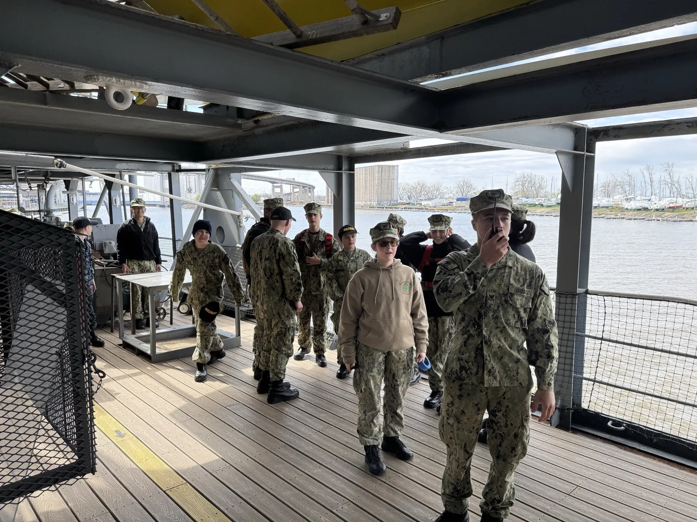

Named for five brothers who served together.
The Sullivans Division trains young people in Buffalo, New York, in the customs, seamanship, and standards of the sea services. We are part of the U.S. Naval Sea Cadet Corps. Joining does not enlist your child in anything.

What the division is
The U.S. Naval Sea Cadet Corps is a congressionally chartered non-profit youth program supported by the Navy and the Coast Guard. It is not military enlistment. Cadets carry no service obligation, and most go on to college or a civilian career. That decision stays entirely theirs.
A division is the local unit, and ours is named for the five Sullivan brothers, who were lost together aboard USS Juneau in 1942. Their words are on our patch: we stick together. USS The Sullivans is berthed a few minutes away at Buffalo's Naval and Military Park, so the name is not an abstraction here. It is a ship our cadets can stand on.
What cadets do at drill is ordinary and demanding at the same time. They learn to wear a uniform correctly and to stand a watch. They practise drill and ceremony, basic seamanship, first aid and CPR, and the chain of command. Older cadets take billets and become responsible for younger ones. Some of it is classroom work. Some of it is standing in formation in the cold. The point is not the tasks. The point is that a young person learns to be counted on.
Beyond drill, cadets compete for advancement and for summer training courses run across the country, from seamanship and small boat operations to aviation ground school and cybersecurity. Those are earned, not bought.
Who can join
There are two programs under the same roof. Which one your child enters depends on age.
| Programme detail | Navy League Cadet Corps NLCC, the entry programme | Naval Sea Cadet Corps NSCC, the full programme |
|---|---|---|
| Age | 10 to 13 | 13 through graduation |
| What cadets do | Naval customs, drill and ceremony, basic seamanship, and team skills. | Advanced naval and maritime training, plus leadership billets in the chain of command. |
| Summer training | Introductory courses, building toward the Sea Cadet programme. | Training courses nationwide, competed for and earned. |
-
Citizenship
U.S. citizens and permanent legal residents.
-
School
Students in good academic standing.
-
Where we drill
The Buffalo area. We give families the exact location and dates when they contact us.
What cadets can train in
Advanced training runs nationwide during school breaks. Availability changes year to year, and every course is competitive. This is what the catalogue has included.
At sea
- Seamanship
- Sailing
- Small boat operations
- Fleet Week
- Submarine seminar
- SCUBA diving
In the air
- Aviation orientation
- Airman training
- FAA ground school
- Aviation maintenance
- Drone operations
On land
- Shipbuilding
- Trade and technical skills
- Special operations
- Public safety
- Cybersecurity
- Recruit and leadership training
The first step is a question, not a commitment.
Ask us what a drill weekend looks like, what it costs, or whether it suits your child. A person from the division answers, usually within a week.